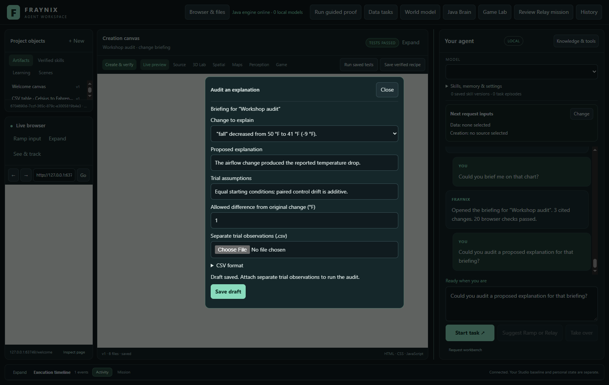
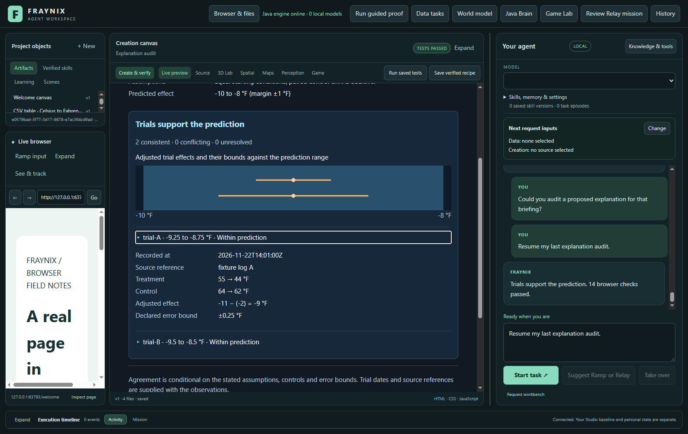
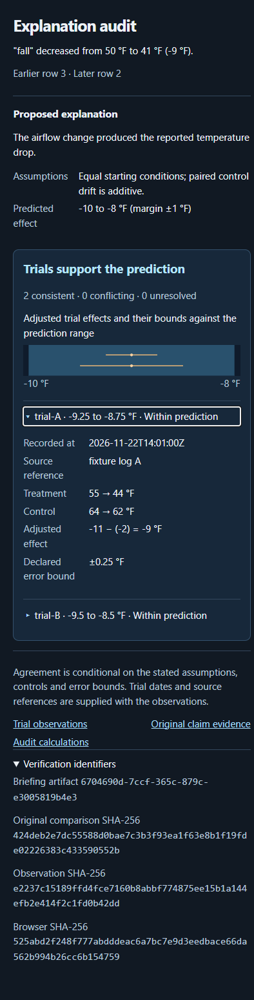

Put an explanation to the test
Ask Fraynix to audit a proposed explanation for a cited change. Attach separate trial observations to see the assumptions, interval and outcome in a verified offline report.

Chat opens a saved proposal and waits for separate trial observations

Fraynix shows its verdict and the exact arithmetic behind one trial

The offline report shows the assessed range and expands a dated paired trial
System files
Open source